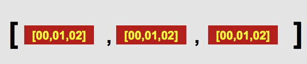

引用类型通常被叫做类（class）。但在 ECMAScript 2015 版本之前的 JavaScript 中并没有类的概念，在 JavaScript 中通常叫做对象定义。
也就是说，使用引用类型其实就是使用对象（该内容在后面的章节学习）。
JavaScript 中预定义了很多的引用类型，其中包含之前学习的包装类型 Boolean、Number 和 String。
下述列表罗列了 JavaScript 中所提供的引用类型:
| 引用类型 | 说明 |
|---|---|
| Date类型 | 获取和设置当前日期时间。 |
| Math类型 | 用于数学计算。 |
| Global类型 | 全局对象，提供全局属性和全局方法。 |
| Array类型 | 用于有序的存储多个值。 |
| RegExp类型 | 用于对字符串模式匹配及检索替换，是对字符串执行模式匹配的强大工具。 |
| Error类型 | 用于匹配代码错误并提供对应提示内容。 |
| Functions类型 | 用于定义 JavaScript 中的函数。 |
| Object类型 | 用于定义 JavaScript 中的对象。 |
JavaScript 中并没有提供日期的数据类型，而是通过 Date 对象的大量方法对日期和时间进行存储或操作。
// 使用指定的年月日[时分秒]进行初始化
var d1 = new Date(2008, 7, 8);
var d2 = new Date(2008, 7, 8, 20, 18, 18);
var d3 = new Date( '2008/8/8' ); // 把string转换为Date
// 初始化为系统时间
var d3 = new Date()
var d4 = new Date;
var d5 = Date(); // 构建一个string，值为当前系统时间
// 初始化为距离计算机元年指定毫秒数的时间
var d6 = new Date(0);
var d7 = new Date( 1000*3600*24*365 ); 通过使用如下方法，获取日期和时间:
| 方法 | 说明 |
|---|---|
| getDate( ) | 返回Date对象“日期”部分数值(1 ~ 31)。 |
| getDay( ) | 返回Date对象“星期”部分的数值(0 ~ 6)。 |
| getFullYear( ) | 返回Date对象“年份”部分的实际数值。 |
| getHours( ) | 返回Date对象“小时”部分的数值(0 ~ 23)。 |
| getMilliseconds( ) | 返回Date对象“毫秒”部分的数值(0 ~ 999)。 |
| getMinutes( ) | 返回Date对象“分钟”部分的数值(0 ~ 59)。 |
| getMonth( ) | 返回Date对象“月份”部分的数值(0 ~ 11)。 |
| getSeconds( ) | 返回Date对象“秒”部分的数值(0 ~ 59)。 |
| getTime( ) | 返回Date对象与UTC时间1970年1月1日午夜之间相差的毫秒数。 |
通过使用如下方法，设置日期和时间:
| 方法 | 说明 |
|---|---|
| setDate( ) | 设置Date对象中“日期”部分的数值(1 ~ 31，但不限于)。 |
| setFullYear( ) | 设置Date对象中“年份”部分的实际数值。 |
| setHours( ) | 设置Date对象中“小时”部分的数值(0 ~ 23，但不限于)。 |
| setMilliseconds( ) | 设置Date对象中“毫秒”部分的数值(0 ~ 999，但不限于)。 |
| setMinutes( ) | 设置Date对象中“分钟”部分的数值(0 ~ 59，但不限于)。 |
| setMonth( ) | 设置Date对象中“月份”部分的数值(0 ~ 11，但不限于)。 |
| setSeconds( ) | 设置Date对象中“秒”部分的数值(0 ~ 59，但不限于)。 |
| setTime( ) | 以毫秒值设置Date对象。 |
| setDate( ) | 设置Date对象中“日期”部分的数值(1 ~ 31，但不限于)。 |
通过使用如下方法，对日期和时间进行格式化:
| 方法 | 说明 |
|---|---|
| toString() | 返回Date对象的字符串形式。 |
| toDateString() | 返回Date对象“日期”部分(年月日)的字符串形式。 |
| toTimeString() | 返回Date对象“时间”部分(时分秒)的字符串形式。 |
| toLocaleString() | 基于本地时间格式，返回Date对象的字符串形式。 |
| toLocaleDateString() | 基于本地时间格式，返回Date对象“ 日期”部分(年月日)的字符串形式。 |
| toLocaleTimeString() | 基于本地时间格式，返回Date对象“时间”部分(时分秒)的字符串形式。 |
| toGMTString() | 基于GMT时间格式，返回Date对象的字符串形式。 |
| toUTCString() | 基于UTC时间格式，返回Date对象的字符串形式。 |
JavaScript 为保存数学公式和信息提供了一个公共位置，即 Math 对象。与直接编写的计算功能相比，Math 对象提供的计算功能执行起来要快得多。
Math 对象是 JavaScript 中的一个全局对象，它并没有构造函数，而是直接使用 Math 对象名称即可。如下所示:
var m = new Math();// 这种写法是错误的
console.log( Math.PI );// 直接使用对象名调用属性
console.log( Math.random() );// 直接使用对象名调用方法Math 对象具有如下成员属性:
| 属性 | 说明 |
|---|---|
| E | 返回算术常量 e，即自然对数的底数（约等于2.718）。 |
| LN2 | 返回 2 的自然对数（约等于0.693）。 |
| LN10 | 返回 10 的自然对数（约等于2.302）。 |
| LOG2E | 返回以 2 为底的 e 的对数（约等于 1.414）。 |
| LOG10E | 返回以 10 为底的 e 的对数（约等于0.434）。 |
| PI | 返回圆周率（约等于3.14159）。 |
| SQRT1_2 | 返回2 的平方根的倒数（约等于 0.707）。 |
| SQRT2 | 返回 2 的平方根（约等于 1.414）。 |
Math 对象具有如下方法:
| 方法 | 说明 |
|---|---|
| abs(x) | 返回数的绝对值。 |
| ceil(x) | 对数进行上舍入。 |
| exp(x) | 返回 e 的指数。 |
| log(x) | 返回数的自然对数（底为e）。 |
| floor(x) | 对数进行下舍入。 |
| max(x, y) | 返回 x 和 y 中的最高值。 |
| min(x, y) | 返回 x 和 y 中的最低值。 |
| pow(x, y) | 返回 x 的 y 次幂。 |
| round(x) | 把数四舍五入为最接近的整数。 |
Math 对象提供了常见的三角函数计算的方法:
| 方法 | 说明 |
|---|---|
| acos(x) | 返回数的反余弦值。 |
| asin(x) | 返回数的反正弦值。 |
| atan(x) | 以介于 -PI/2 与 PI/2 弧度之间的数值来返回 x 的反正切值。 |
| atan2(x) | 返回从 x 轴到点 (x,y) 的角度（介于 -PI/2 与 PI/2 弧度之间）。 |
| cos(x) | 返回数的余弦。 |
| sin(x) | 返回数的正弦。 |
| tan(x) | 返回角的正切。 |
Math 对象提供了生成随机数的方法:
| 方法 | 说明 |
|---|---|
| random() | 返回 0 ~ 1 之间的随机数。 |
i = Math.random();// 0<=i<1
var max = 100;
i = Math.random()*max ;// 0<=i<max
i = parseInt( Math.random()*max );// 0<=i<max
var min = 50;
i = parseInt( Math.random()*(max-min) ) + min;// min<=i<maxGlobal（全局）对象是 JavaScript 中最特别的对象，因为这个对象感觉上并不存在似的。
不属于任何其他对象的属性和方法，实际上都是 Global 对象的属性和方法。
事实上，也没有全局属性和全局方法，所有在全局域中定义的属性和方法，都是 Global 对象的属性和方法。例如之前学习的 isNaN( )、parseInt( ) 和 parseFloat( ) 方法等，都是 Global 对象的方法。
Global 对象提供的属性，即全局属性。在 JavaScript 中的任何位置都可以使用。具体属性如下列表:
| 方法 | 说明 |
|---|---|
| Infinity | 正的无穷大的数值。 |
| NaN | 某个值是不是数字值。 |
| undefined | 未定义的值。 |
Global 对象提供的方法，即全局方法。在 JavaScript 中的任何位置都可以使用。具体方法如下列表:
| 方法 | 说明 |
|---|---|
| eval( ) | 对一串字符串形式的JavaScript代码字符求值。 |
| uneval( ) | 创建的一个Object的源代码的字符串表示。 |
| isFinite( ) | 判断传入的值是否是有限的数值。 |
| isNaN( ) | 判断一个值是否不是数字值。 |
| parseInt( ) | 解析字符串参数，并返回指定的整数。 |
| parseFloat( ) | 解析字符串参数，并返回一个浮点数。 |
| decodeURI( ) | 对已编码的统一资源标识符(URI)进行解码，并返回其非编码形式。 |
| encodeURI( ) | 对统一资源标识符(URI)进行编码，并返回编码后的URI字符串。 |
eval( ) 方法存在安全问题。因为 eval( ) 方法会执行任意传给它的代码，而这段代码可能是未知的或者是来自不信任的源。
大部分使用 eval( ) 方法实现时，都会具有不使用 eval( ) 方法实现的方式。
一般建议在任何情况下，都不要使用 eval( ) 方法。
数组是值的有序集合。数组中的每个值叫做一个元素，而每个元素在数组中都有一个唯一的位置。这个位置用数字表示，叫做索引数据；用字符串表示，叫做关联数组。
JavaScript 数组是无类型的：数组的元素可以是任何类型，例如字符串、数字值、布尔值等，而且每个数组中的不同元素可能是不同类型。
JavaScript 数组是动态的：根据需要，可以动态地向数组插入新的元素，或者从数组中删除指定的元素。
数组的最大作用就是用于存储多个值。定义数组分别两种形式:
var arr1 = [ ];
var arr2 = [ 1, "a", true ];var arr1 = Array( );
var arr2 = Array( 1, "a", true );值得注意的是: 在一个数组中的不同元素可以是不同数据类型。
索引数组就是存储元素的位置使用数字值来表示，一般称之为下标或角标。具体创建方式如下述代码:
var arr = [];
arr[0] = 1;
arr[1] = "a";
arr[2] = true;值得注意的是: 索引数组的下标是从 0 开始的。
关联数组就是存储元素的位置使用字符串来表示，一般称之为名称（name或key）。具体创建方式如下述代码:
var arr = [];
arr['num'] = 1;
arr['str'] = "a";
arr['bool'] = true;值得注意的是: 关联数组的名称（name或key）是字符串，必需使用单引号或双引号将其包裹。
稀疏数组就是包含 0 开始的不连续索引的数组。具体创建方式如下述代码:
var arr = Array( 10 );// 数组没有任何元素，数组的长度为 10
var arr = [];// 创建一个空数组
arr[100] = "a";// 向下标为 100 的位置添加一个元素 a值得注意的是: 上述代码中的第一行，并不是创建一个数组包含一个元素 10，而是创建一个不包含任何元素的数组长度为 10。
每个数组都有一个length属性，表示数组的长度。
var arr1 = [ 1, "a", true ];
console.log( arr1.length );// 输出 3var arr2 = [];
arr2[14] = "a";
console.log( arr2.length );// 输出 15数组的主要作用是用于存储和读取数据信息，之前已经对数组存储数据信息掌握了。下面来看看如何从数组中读取指定的元素:
var arr = [ 1, "a", true];
console.log( arr[1] );// 输出字符串 a
var arr = [];
arr['num'] = 1;
arr['str'] = "a";
arr['bool'] = true;
console.log( arr['str'] );// 输出字符串 a不仅可以从数组中读取指定的元素，还可以根据需求修改数组中指定的元素值。
var arr = [ 1, "a", true];
console.log( arr[1] );// 输出字符串 a
arr[1] = "b";
console.log( arr[1] );// 输出字符串 b
var arr = [];
arr['num'] = 1;
arr['str'] = "a";
console.log( arr['str'] );// 输出字符串 a
arr['str'] = "b";
console.log( arr['str'] );// 输出字符串 b不仅可以根据需求修改数组中指定的元素值，也可以删除数组中指定的元素值。数组删除指定元素值使用 delete 关键字。
var arr = [ 1, "a", true];
delete arr[1];
console.log( arr[1] );// 输出字符串 undefined值得注意的是: 上述代码使用 delete 关键字执行删除数组元素值的操作时，并不影响数组的长度。
var arr = [ 1, "a", true];
delete arr[1];
console.log( arr.length );// 输出 3使用for语句是遍历数组元素最常见的方法:
var arr = [ 1, "a", true];
for( var i = 0; i < arr.length; i++ ){
console.log( arr[i] );
}也可以从数组的最后向前（倒序）进行遍历:
var arr = [ 1, "a", true];
for( var i = arr.length-1; i >= 0; i-- ){
console.log( arr[i] );
}在 ECMAScript 5 中新增了 for in 语句，同样也可以用于遍历数组:
var arr = [ 1, "a", true];
for( var i in arr ){
console.log( i + " : " + arr[i] );
}值得注意的是:
- for 关键字后定义的变量 i 表示当前数组的下标。
- for in 语句不仅会遍历数组的所有元素，还有一些数组自带的属性。一般建议使用 for 语句进行数组遍历。
for in 语句还可以用于遍历稀疏数组，循环的每次将一个有效元素返回。不存在的索引将不会遍历到:
var arr = [];
arr[100] = "a";
for( var i in arr ){
console.log( i + " : " + arr[i] );
}数组是可以嵌套的，这就意味着一个数组可以作为一个元素被包含在另外一个数组里面。利用JavaScript 这个特点，创建二维数组，即数组的数组。

var arr1 = [ [11,12,13], [21,22,23], [31,32,33] ];var arr2 = [];
arr2[0] = [ 101 ];
arr2[1] = [ 201, 202 ];
arr2[2] = [ 301, 302, 303 ]; var arr1 = [ [11,12,13], [21,22,23], [31,32,33] ] ;
console.log( arr1[0][0] );// 值为11
arr1[1][2] = 230;// 把23更改为230for( var i = 0; i < arr1.length; i++ ){
for( var j = 0; j < arr1[i].length; j++ ){
console.log( arr1[i][j] );
}
}如何确定当前是一个数组，JavaScript 提供如下几种方式:
JavaScript 提供了如下方法，用于数组的转换:
| 方法 | 说明 |
|---|---|
| toString() | 把数组转换为字符串，并返回结果。 |
| valueOf() | 返回数组对象的原始值。 |
var colors = [ "red", "blue", "green" ];
console.log( colors.toString() );// red,blue,green
console.log( colors.valueOf() );// red,blue,greenJavaScript 提供了如下方法，用于数组的进出栈操作:
| 方法 | 说明 |
|---|---|
| push() | 向数组的末尾添加一个或更多元素，并返回新的长度。 |
| pop() | 删除数组的最后一个元素并返回删除的元素。 |
| shift() | 删除并返回数组的第一个元素。 |
| unshift() | 向数组的开头添加一个或更多元素，并返回新的长度。 |
var colors = [ "red", "blue", "green" ];
var count = colors.push( "black" );// 4
var item = colors.pop();// black
var count = colors.unshift( "pink" );// 4
var item = colors.shift();// pinkJavaScript 提供了如下方法，用于数组的排序操作:
| 方法 | 说明 |
|---|---|
| reverse() | 反转数组的元素顺序。 |
| sort() | 对数组的元素进行排序。 |
var values = [ 0, 1, 5, 10, 20 ];
console.log( values.sort() );// 0,1,10,20,5
console.log( values.reverse() );// 20,10,5,1,0值得注意的是: reverse( ) 和 sort( ) 方法的返回值是经过排序之后的数组。
JavaScript 提供了如下方法，用于多个数组之间的连接操作:
| 方法 | 说明 |
|---|---|
| concat() | 连接两个或更多的数组，并返回结果。 |
var colors = [ "red", "blue", "green" ];
var colors2 = colors.concat( "yellow", [ "black", "pink" ] );
console.log( colors2 );
// red,blue,green,yellow,black,pinkJavaScript 提供了如下方法，用于数组的删除、插入和替换操作:
| 方法 | 说明 |
|---|---|
| slice() | 选取数组的的一部分，并返回一个新数组。 |
| splice() | 从数组中添加或删除元素。 |
var colors = [ "red", "blue", "green", "yellow" ];
var colors2 = colors.slice( 1 );// blue,green,yellow
var colors3 = colors.slice( 1, 3 );// blue,green
var removed1 = colors.splice( 0, 1 );// red
colors.splice( 1, 0, "orange" );// red,orange,blue,green,yellow
var removed2 = colors.splice( 1, 1, "purple" );// blue
console.log( colors );// red,purple,green,yellowJavaScript 提供了如下方法，用于获取数组中指定元素的索引值:
| 方法 | 说明 |
|---|---|
| indexOf() | 搜索数组中的元素，并返回它所在的位置。 |
| lastIndexOf() | 返回一个指定的字符串值最后出现的位置，在一个字符串中的指定位置从后向前搜索。 |
var numbers = [ 1, 2, 3, 4, 5 , 4, 3, 2, 1 ];
console.log( numbers.indexOf( 4 ) );// 3
console.log( numbers.lastIndexOf( 4 ) );// 5本笔记的内容免费开源，任何人都可以免费学习、分享，甚至可以进行修改。但需要注明作者及来源，并且不能用于商业。
本笔记采用知识共享署名-非商业性使用-禁止演绎 4.0 国际许可协议进行许可。